means the derivedTypeElement is not a FacetOperation
means the derivedTypeElement is not a FacetOperationEMF Facet provides a customization component, that can be used to define the appearance of model elements when viewed in an editor or view that supports this customization mechanism.
A customization is defined in a model that conforms to the EMF Facet customization metamodel. This model is saved in a file with the «.custom» file extension. The file can be created via a wizard in Eclipse from “New -> EMF Facet -> Create a customization 0.2” option in menu and will prompt the user for the nsURI and prefix for the customization model. The following screen captures show step by step the creation process :
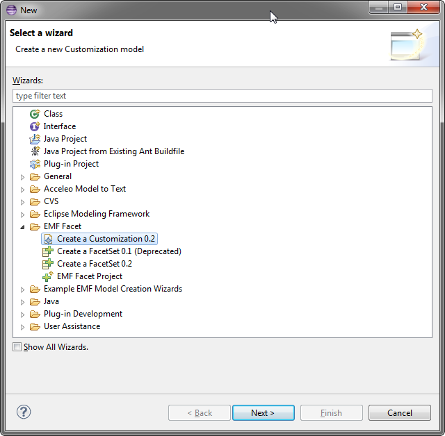
Figure 1 : custom file creation wizard
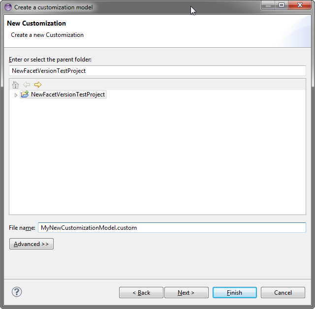
Figure 2 : file name selection
Figure 3 : nsURI and prefix specification for the model
Upon the creation of the customization model file, the editor will open and allow the user to populate the model:
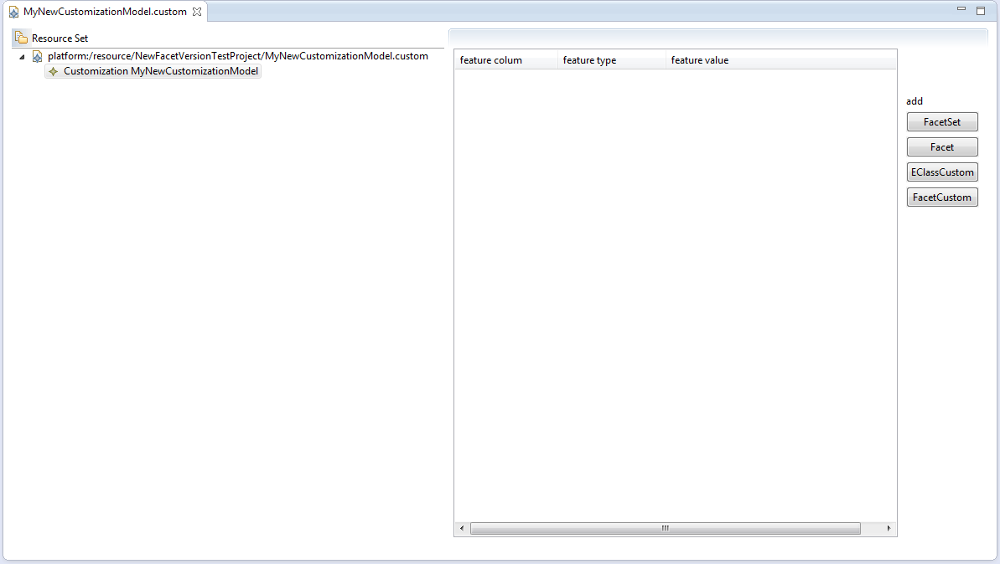
Figure 4 : empty Customization created from the wizard
Customization is a specific FacetSet acting as the main container for the customization elements. These elements may be customization for
EClass or Facet; each of them containing DerivedTypedElement such as FacetAttribute, FacetReference, and FacetOperation.
Custom classes can be created when a Customization element is selected, the far right panel displays buttons to ease the creation of such
elements:
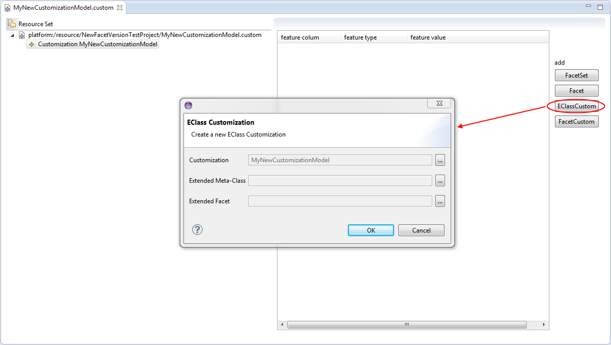
Figure 5 : creation of an EClassCustom
The dialog allows specifying generic features for Custom classes and the properties view is always there to fine-tune different features:
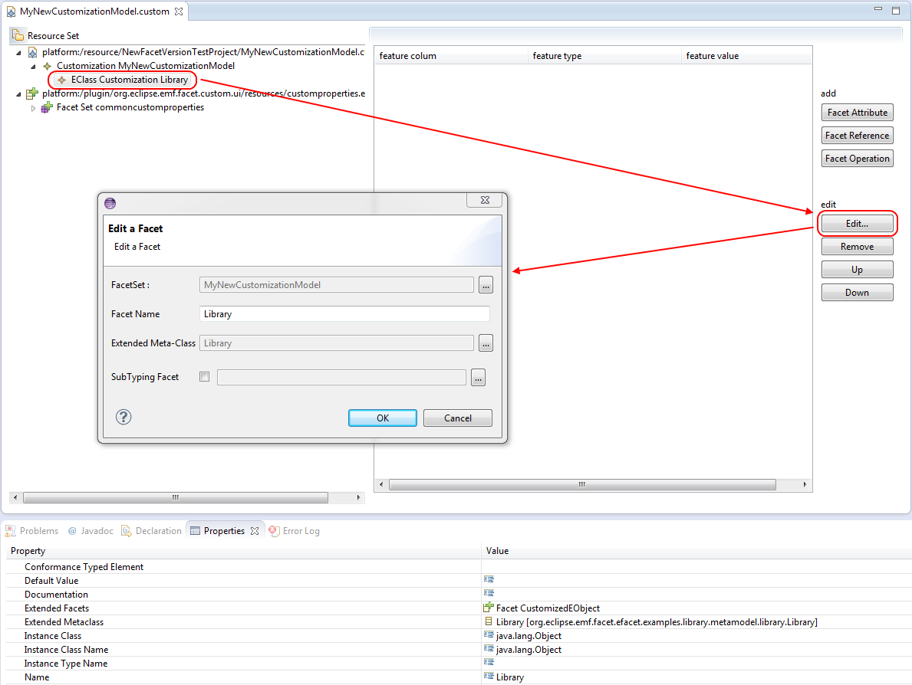
Figure 6 : Edition of an EClassCustom
In this example, the EClassCustom extends the metaclass from the org.eclipse.emf.facet.examples.library metamodel, the editor will
automatically load every model in which a facet specifies this metamodel, hence the loading of .efacet and .custom files available in the
platform. This allow an easy access of all declared facets bound to an element of the customized metamodel.
The process is identical for the creation of a FacetCustom:
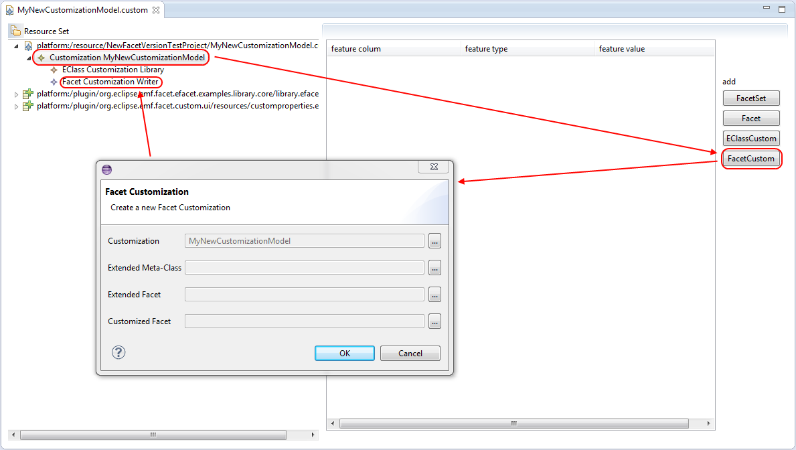
Figure 7 : creation of a FacetCustom
If needed, properties view allows the user to have a more advanced control on custom elements:
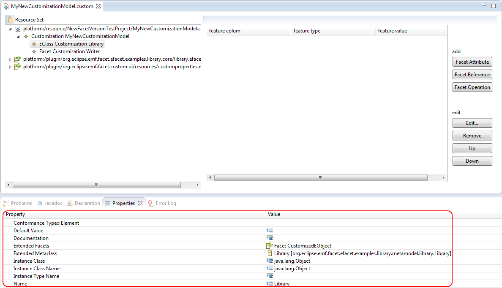
Figure 8 : fine-tune edition of an EClassCustom
Also, applied customization are strongly affected by the order the manager load them up, the editor provides a way to modify this order by
selecting an element and press either the “Up” or “Down” bottom. This results in modifying the index of the selected element in its
containment list.
Custom element, either ECLassCustom or FacetCustom, contains DerivedTypeElement. Those elements can be FacetAttribute, FacetReference or
FacetOperation. The most used lement for Customization is the FacetOperation: each of these FacetOperations overrides the FacetOperation
corresponding to the customizable feature you want to customize: label, font, color, etc…
In order to create a FacetOperation, a FacetCustom or an EClassCustom must be selected:
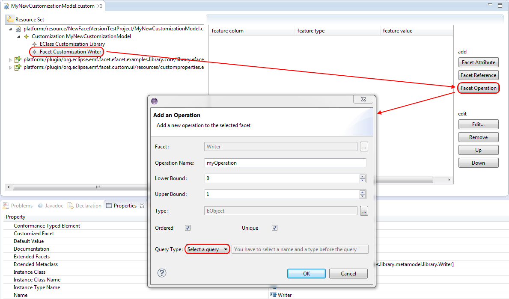
Figure 9 : creation of a FacetOperation
Finally, the user must provide an implementation for an overriding FacetOperation, by the means of a Query that will return the value of the
customization when this Query is evaluated on a model element that conforms to the extendedFacet. If the query has not been written yet, the
wizard provides an easy wizard to create the Query directly extending one of the Query class available, or the editor will scan the project
and prompt the user to choose among a list of available query classes.
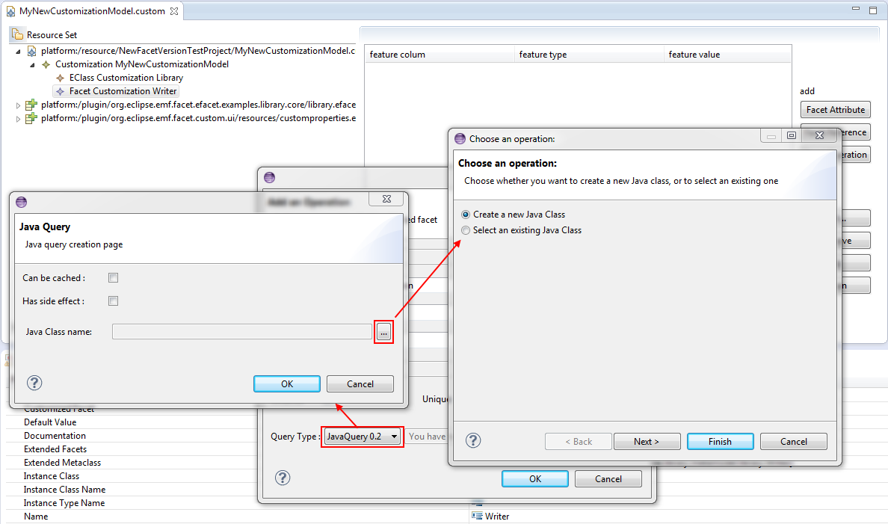
Figure 10 : Creation of a Query for a FacetOperation
If a FacetOperation is selected, it is possible to add parameters. This parameter is useful for customizing the structural feature
corresponding to a single customized model element:
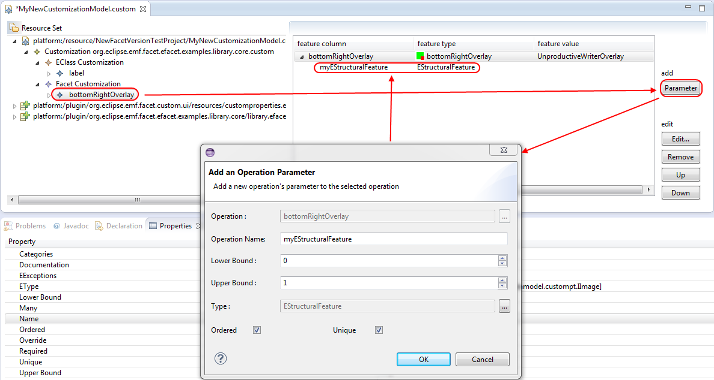
Figure 11 : adding a parameter to a FacetOperation
The left tree is the main navigator of the model in the editor, when a Custom element is selected or any DerivedTypeElement, the right panel
shows the list of all child derivedTypeElements, or brother depending on the nature of the left panel selection. This panel offers a quick
overview of the DerivedTypeElement:
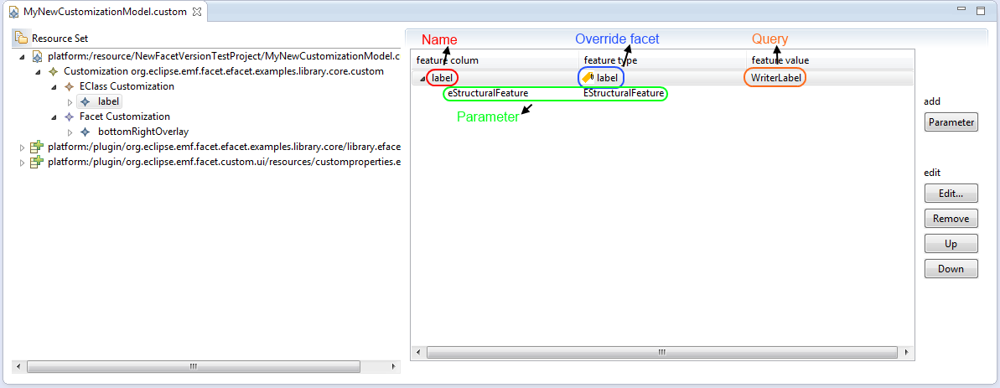
Figure 12 : detailed view of the right panel
An icon symbolizes the override customization facet, all icons are as follow:
means the derivedTypeElement is not a FacetOperationAn advanced control of FacetOperation, and moreover DerivedTypeElement, is available via the properties view:
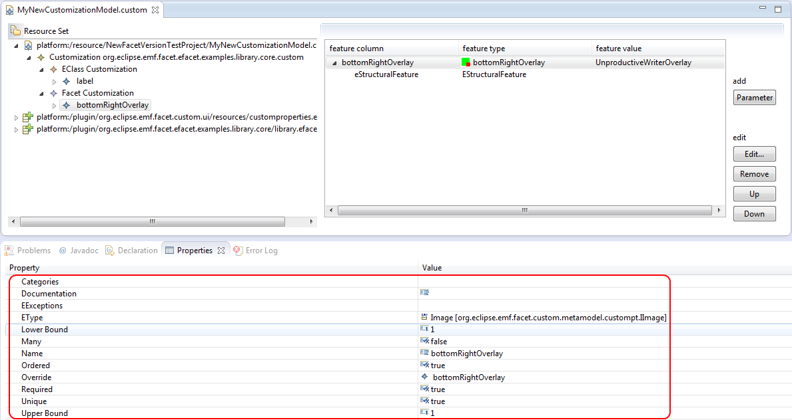
Figure 13 : fine-tune edition of a FacetOperation